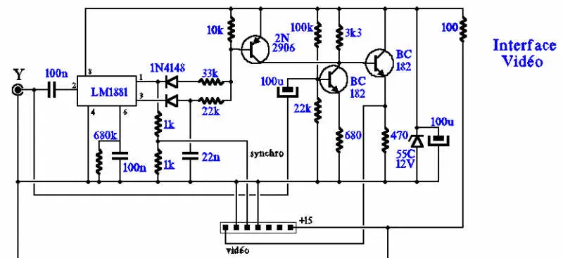
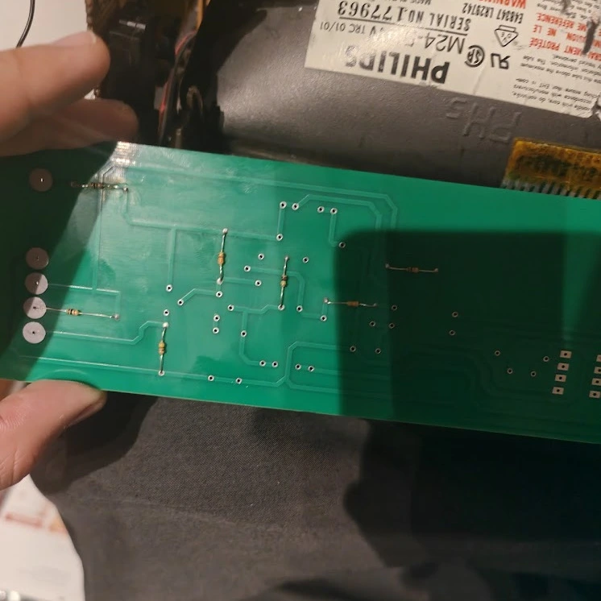

In December 2024, I modded a Minitel Telic 1 into an HDMI display and USB keyboard.
Keyboard
The Minitel keyboard is defined by an 8×8 matrix (sadly, it’s a diode-less matrix, meaning ghosting and masking may occur).
Using the following matrix:
↑ |
Correction |
Annulation |
↓ |
Shift |
← |
→ |
↲ |
T |
E |
R |
Y |
; |
- |
: |
? |
G |
D |
F |
H |
* |
7 |
4 |
1 |
. |
Esc |
, |
' |
Suite |
Retour |
Envoi |
Répétition |
B |
C |
V |
N |
8 |
5 |
2 |
|
Guide |
Z |
A |
Sommaire |
U |
I |
O |
P |
Fnct |
S |
Q |
Ctrl |
J |
K |
L |
M |
Connexion Fin |
X |
W |
Espace |
# |
9 |
6 |
3 |
So using an RP2040-Zero board, the KMK firmware and some python:
1
2
3
4
5
6
7
8
9
10
11
12
13
14
15
16
17
18
19
20
21
22
23
24
import microcontroller.pin as pin
from kmk.kmk_keyboard import KMKKeyboard
from kmk.keys import KC
from kmk.scanners import DiodeOrientation
keyboard = KMKKeyboard()
keyboard.col_pins = (pin.GPIO1, pin.GPIO2, pin.GPIO3, pin.GPIO4, pin.GPIO11, pin.GPIO12, pin.GPIO13, pin.GPIO14)
keyboard.row_pins = (pin.GPIO0, pin.GPIO5, pin.GPIO6, pin.GPIO7, pin.GPIO8, pin.GPIO9, pin.GPIO10, pin.GPIO15)
keyboard.diode_orientation = DiodeOrientation.COL2ROW
keyboard.keymap = [[
KC.UP, KC.F24, KC.F23, KC.DOWN, KC.LSHIFT, KC.LEFT, KC.RIGHT, KC.ENTER,
KC.T, KC.E, KC.R, KC.Y, KC.M, KC.MINUS, KC.COLON, KC.QUESTION,
KC.G, KC.D, KC.F, KC.H, KC.ASTERISK, KC.N7, KC.N4, KC.N1,
KC.DOT, KC.ESCAPE, KC.COMMA, KC.QUOTE, KC.F22, KC.F21, KC.F20, KC.F19,
KC.B, KC.C, KC.V, KC.N, KC.N0, KC.N8, KC.N5, KC.N2,
KC.F18, KC.W, KC.Q, KC.F17, KC.U, KC.I, KC.O, KC.P,
KC.RALT, KC.S, KC.A, KC.RCTRL, KC.J, KC.K, KC.L, KC.SCOLON,
KC.F17, KC.X, KC.Z, KC.SPACE, KC.HASH, KC.N9, KC.N6, KC.N3
]]
if __name__ == '__main__':
keyboard.go()
Display Circuit
Using the circuit following circuit:

I was able to turn a composite signal into one understandable by the Minitel display driver.
Building the Circuit
To build the circuit I made a simple PCB out of the Circuit and Soldered all of the components on it

Adding HDMI
To add HDMI Input I simply used a cheap HDMI to Composite adapter from Amazon and used the RP2040-Zero 5V rail as the power suply.
Conclusion
After a few weeks of troubleshooting I was able to watch movies and play games at a wapping 25 FPS, while having my eyes burned by the cathodic display of this antiquity.
Sources and Inspirations
-
Keyboard Matrix: https://entropie.org/3615/index.php/2020/08/05/le-clavier-du-minitel-1b/
-
KMK Firmware: https://github.com/KMKfw/kmk_firmware
-
Composite Circuit: https://www.cfp-radio.com/realisations/rea48/minitel-01.html